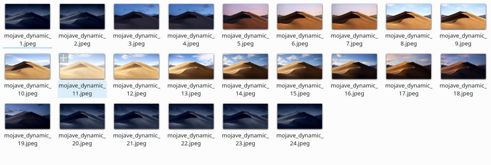

原文: https://blog.brucezhang.cf/2018/12/07/kde-dynamic-wallpaper.html
1. 获取并整理图片

你也可以在这里找到所有的资源 Reddit Page，然后按上面的格式排列一下所有的图片，文件名里面的数字表示当前的小时数，你可以根据自己的喜好调整黑夜的时长哦，反正晚上就用最黑的那张就好了。
2. 编写脚本
首先，第一个脚本是用来修改所有桌面的壁纸的脚本，是其他网友分享的脚本，可以保存为 /home/你的用户名/bin/ksetwallpaper ，后文以此路径为例，请注意对应修改为你的路径。
1 | !/usr/bin/env python3 |
写入这个脚本以后，执行 chmod +x /home/你的用户名/bin/ksetwallpaper 添加可执行权限。
然后是第二个脚本，目的是获取当前的小时数并且设置壁纸和锁屏壁纸。
保存为 /home/你的用户名/bin/wallpaper_timechange
(假设你的壁纸保存路径为 /home/你的用户名/Pictures/Wallpapers/mojave_dynamic)
1 | !/bin/env bash |
然后依然是给这个脚本添加可执行权限 chmod +x /home/你的用户名/bin/wallpaper_timechange
3. 编写用户单元和定时器
这里当然要用上超级好用的 SYSTEMD! (Selling my underpants!)
我们要新建一个用户单元用于执行换壁纸的任务，另一个用户定时器用来定时执行前面的脚本。
首先，我们新建一个文件，假如文件路径为 /home/你的用户名/.config/systemd/user/wallpaper-hourly.service
1 | [Unit] |
这个脚本很简单，运行它就执行一遍换壁纸脚本。
第二个就是定时脚本，我们可以很方便的使用 systemd 编写定时器任务 (See U Crontab)，再假如文件路径为 /home/你的用户名/.config/systemd/user/wallpaper-hourly.timer
1 | [Unit] |
这个定时器指定了两个任务，一个是 OnBootSec，任务是开机后 10 秒执行，另一个是小时周期任务，预订为每小时 0 分 0 秒执行，安排上了！
保存这两个文件以后，记住两个脚本的名称～
然后进入终端，运行下面的命令们
systemctl –user daemon-reload # 重载用户单元
systemctl –user enable wallpaper-hourly.timer # 开机自启动定时器
systemctl –user start wallpaper-hourly.timer # 运行定时器
然后可以使用 systemctl –user status wallpaper-hourly.timer 检查一下是否正常启动，然后可以看到下次执行时间的显示如下
…
Trigger: Fri 2018-12-07 22:00:00 CST; 29min left
…
表示下次执行时间为 2018-12-07 的 22 点整。
然后你的壁纸就会开始跟随你的系统时间变化哦。
当然，下一步还有更加棒的完善哦，比如 SDDM 背景的修改 (也许能行吧FLAG)，还有就是判断当前的日出日落时间调整，夏令时的调整 (Just imagine..)
UPDATE 1:
可以修改条件为 OnActiveSec=5sec 指定 timers 运行后 5 秒运行一次任务。